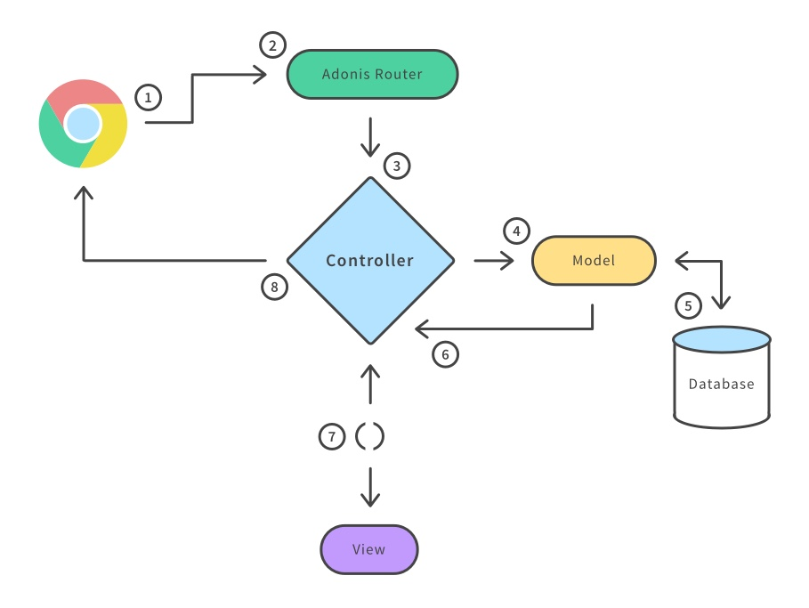

Meet AdonisJS
@carlsonorozco
Hi! I'm Carlson
I'm a
Web Developer
Full-Stack?
Half-Stack?

The out of stack Developer

50% Backend Developer
- PHP
- Perl
- Javascript
- Bash
- MySQL
- Redis
- etc...
30% DevOps
- AWS
- Google Cloud
- GitHub
- Nginx
- etc...
15% Love Cats & Dogs
5% Frontend Developer
- HTML5
- CSS3
- MV* Frontend Framework
- JQuery! Mother Father
More about me: @carlsonorozco
Hello AdonisJS
Practical • Reliable • Productive
What is AdonisJS?

MVC Framework for NodeJS to write webapps with less code
MVC Pattern
Define a Model
'use strict'
const Lucid = use('Lucid')
class User extends Lucid {
}
Using Model
const User = use('App/Model/User')
// All Users
const users = yield User.all()
// Using where clause
const activeUsers = yield User.query()
.where('status', 'active').fetch()
Example Of Controller
const User = use('App/Model/User')
class UsersController {
* index (request, response) {
const users = yield User.all()
yield response.sendView('users.list', {
users: users.toJSON()
})
}
}
Example Of View
{% for user in users %}
- {{ user.username }}
{% endfor %}
Yet Another Web Application Framework
Directory Structure

├── app
│ ├── Commands
│ ├── Http
│ ├── Listeners
│ ├── Model
├── bootstrap
├── config
├── database
│ ├── migrations
│ └── seeds
├── providers
├── public
├── resources
│ └── views
├── storage
Framework concept and Features
Basic Routing in AdonisJs
const Route = use('Route')
Route.get('/', function * (request, response) {
response.send('This is the home page')
})
Routing Middleware
const Route = use('Route')
Route
.get('/profile', 'UserController.profile')
.middleware('auth')
Interactive Shell A.k.a Ace
Active Record ORM
yield User.all()
yield User.query().where('status', 'active').fetch()
Defining database relations
class User extends Lucid {
profile () {
return this.hasOne('App/Model/Profile')
}
posts () {
return this.hasMany('App/Model/Post')
}
}
Creating New Model
./ace make:model User
# or with migration
./ace make:model User --migration
app/Model/User.js
'use strict'
const Lucid = use('Lucid')
class User extends Lucid {
}
Lucid Methods
query(), fetch(), first(), findBy(key, value), find(value), all(), ids(), pair(lhs, rhs), paginate(page, [perPage=20]), pick([limit=1]), pickInverse([limit=1]), create(values), save(), createMany(), findOrFail(value), findByOrFail(key, value), findOrCreate (whereAttributes, values), withTrashed()
etc...
Migrations

Basic Migration Example
./ace make:migration users --create=users
// Output
create: database/migrations/1464437815620_users.js
'use strict'
const Schema = use('Schema')
class UsersSchema extends Schema {
up () {
this.create('users', (table) => {
table.increments()
table.timestamps()
})
}
down () {
this.drop('users')
}
}
module.exports = UsersSchema
Seeds And Factories
// database/factory.js
const Factory = use('Factory')
Factory.blueprint('App/Model/User', (fake) => {
return {
username: fake.username(),
email: fake.email(),
password: fake.password(),
firstName: fake.first(),
lastName: fake.last()
}
})
// database/seeds/Database.js
'use strict'
const Factory = use('Factory')
class DatabaseSeeder {
* run () {
yield Factory.model('App/Model/User').create(5)
}
}
module.exports = DatabaseSeeder
./ace db:seed
A lot more
- Database Hooks
- Query Builder
- Authentications (Sessions, Basic Auth, JWT, Personal API Token)
- Cookies
- Errors & Exceptions
- Events
- Validations
- Internationalization
- WebSocket
Why AdonisJS?

1. Work on ideas, instead of deciding or downloading bunch of modules everytime.
2. Hiring developers are easy as you and the one you are about to hire will be working on the same standards and conventions.
3. The framework makes use of latest inbuilt ES2015 features to get rid of spaghetti code.

4. AdonisJs ships with a bunch of 1st party components known as providers. Writing entire web server is a matter of weeks(if not days).

"Secret to productivity is not finding more time to do more stuff, but finding the strength to do less of the stuff that doesn’t need doing." – David Heinemeier Hansson
Give it a try

Awesome AdonisJS Resources
- awesome-adonis - A curated list of awesome resources from the AdonisJS ecosystem.
- adonuxt - starter template for Nuxt.js with AdonisJS
- adonis/discussion - discussing about new features and sharing random thoughts.
- AdonisJS at Gitter
- adonis-rally - Adonis rally is a forum engine written using AdonisJs.
Join us at AdonisJS Philippines
https://fb.com/groups/adonisjs.philippines/Tapos
References
https://scotch.io/tutorials/meet-adonisjs-a-laravel-style-mvc-framework-for-node-js
https://medium.com/@Charles6Andy/node-js-broken-ecosystem-and-rise-of-adonisjs-46e3d63e5fcc
https://medium.com/ph-devconnect/adonisjs-framework-concept-and-features-529734d07606
http://techinpink.com/2017/02/27/getting-started-with-adonisjs%E2%80%8A-%E2%80%8Aa-javascript-framework-for-node-js-2/
https://auth0.com/blog/creating-your-first-app-with-adonisj-and-adding-authentication/
https://raygun.com/blog/node-js-performance-2017/
https://github.com/adonisjs/projects